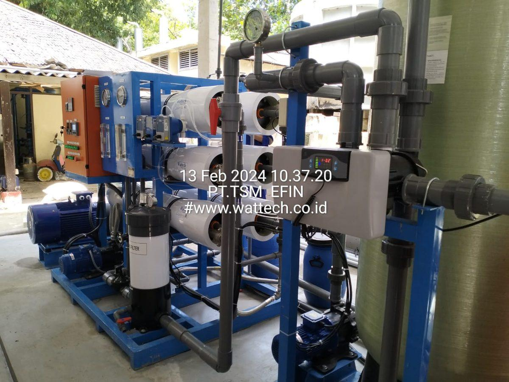
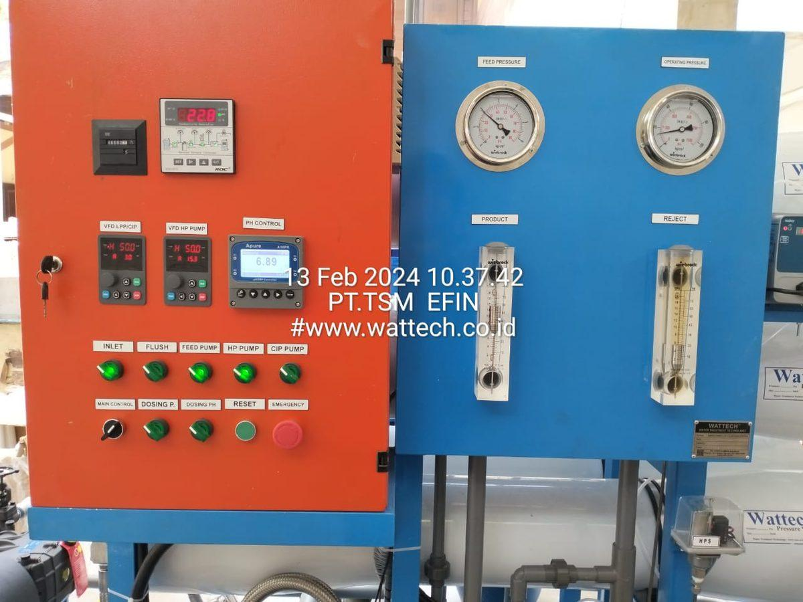
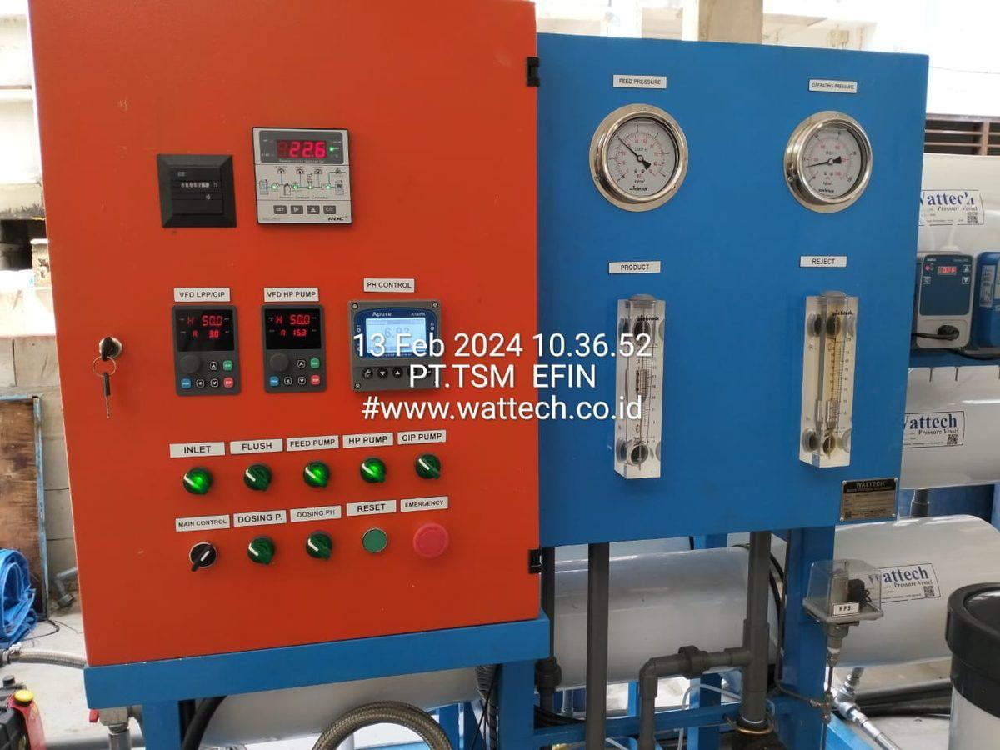
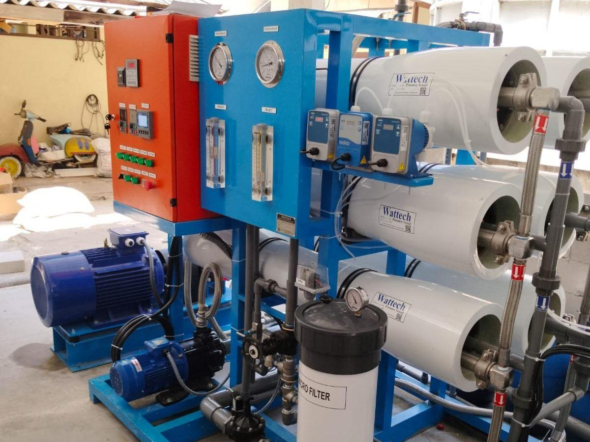
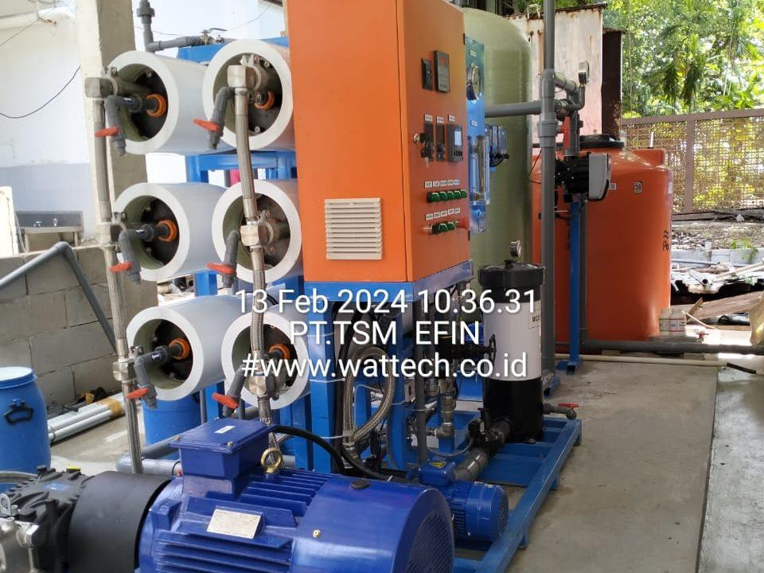
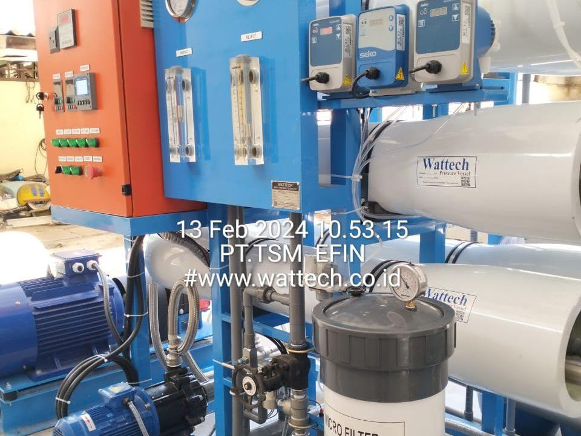
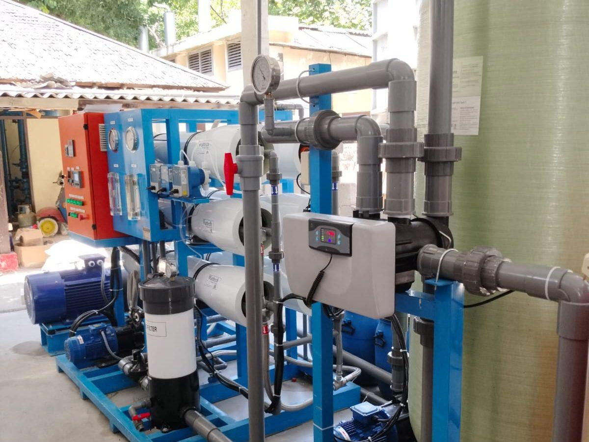
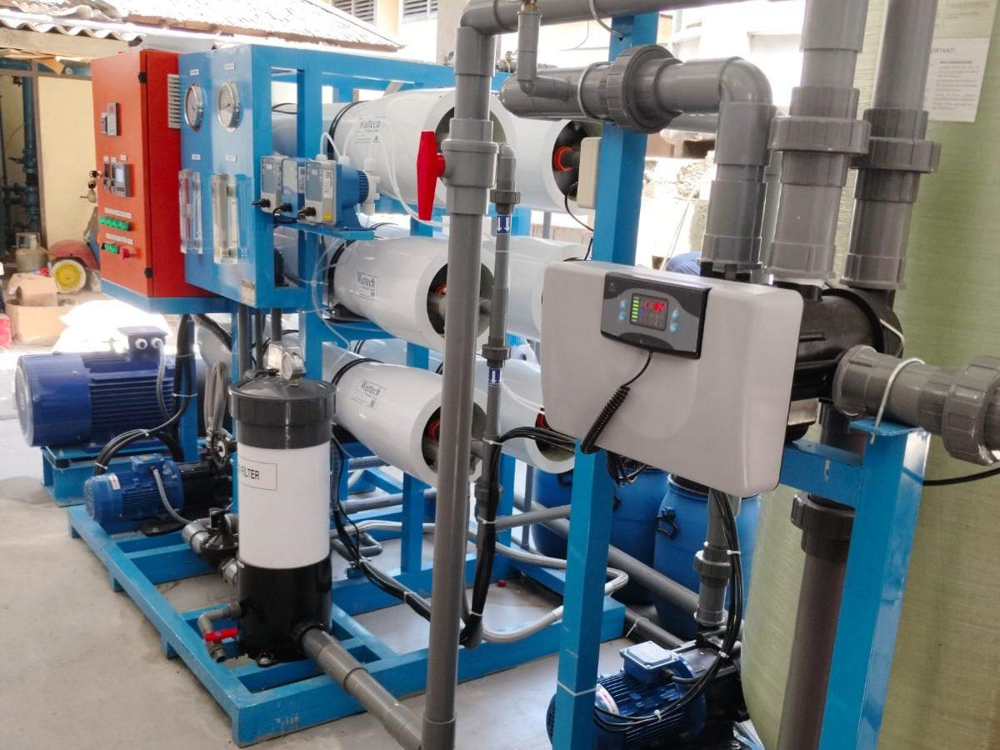

| Klien / Pengelola Proyek | PT Mako Anugerah Kreasindo (vendor pengelola), untuk fasilitas resort di Pulau Ayer Kepulauan Seribu, Provinsi DKI Jakarta |
|---|---|
| Lokasi | Pulau Ayer, Kepulauan Seribu (sekitar 1,5 jam perjalanan kapal dari Jakarta) |
| Tipe Sistem | Sea Water Reverse Osmosis (SWRO) — kontainer-mounted |
| Kapasitas Produk | 76 m³/hari — cukup untuk operasional resort 100+ kamar |
| Sumber Air | Air laut Kepulauan Seribu (TDS ~33.000 ppm) |
| Kualitas Output | TDS < 200 ppm, layak minum tamu resort, taste optimal setelah remineralisasi |
| Konfigurasi | Pre-treatment + UF + SWRO + ERD + Remineralisasi — semua dalam kontainer |
| Deployment | Pengiriman via kapal dari Jakarta, instalasi 5 hari, commissioning 1 minggu |
| Tahun Pengerjaan | Januari 2024 |
| Status | Aktif beroperasi |
Latar Belakang Proyek
Pulau Ayer adalah salah satu resort populer di Kepulauan Seribu, melayani wisatawan domestik dan internasional yang mencari pengalaman tropical island getaway dekat dengan Jakarta. Sebagai resort dengan kapasitas 100+ kamar plus restaurant, kolam renang, dan fasilitas pendukung, kebutuhan air harian sangat besar — namun pulau-pulau di Kepulauan Seribu tidak memiliki sumber air tawar alami yang dapat dimanfaatkan dalam volume komersial.
Sebelumnya, resort bergantung pada pengiriman air kapal mingguan dari Jakarta — solusi yang costly, fluktuatif, dan rentan terhadap cuaca buruk. Saat angin kencang atau gelombang tinggi, pengiriman air dapat tertunda, memaksa resort untuk meminta tamu menghemat penggunaan atau bahkan menutup sebagian fasilitas. Selain itu, biaya transportasi air dari daratan dapat mencapai ratusan juta rupiah per tahun hanya untuk satu pulau.
Manajemen resort akhirnya memutuskan investasi sistem SWRO mandiri untuk membebaskan operasional dari ketergantungan pengiriman air. TSM dipilih sebagai vendor berdasarkan track record dengan resort kepulauan lain dan kemampuan delivery sistem kontainer plug-and-play yang ideal untuk kondisi pulau.
Tantangan Pulau Terpencil
1. Logistik Pengiriman ke Pulau
Setiap komponen — dari sistem SWRO utama hingga sekrup terkecil — harus dikirim ke pulau via kapal. Sistem permanen yang dirakit di lokasi (membutuhkan pengiriman individual setiap komponen) sangat impractical karena setiap pengiriman tergantung cuaca dan kapasitas kapal. Solusi yang efektif adalah kontainer plug-and-play — sistem lengkap dirakit dan dites di workshop TSM Bekasi, kemudian dikirim sebagai satu unit kontainer 40 ft.
2. Tidak Ada Engineer Permanen di Pulau
Resort memiliki staff engineering general untuk maintenance umum, tapi tidak ada water treatment specialist permanen. Sistem harus dirancang untuk operasi semi-otomatis dengan minimum supervisi, plus remote monitoring agar tim TSM di Jakarta dapat memantau kinerja dan memberikan support technical jarak jauh.
3. Power Supply Terbatas
Pulau Ayer mengandalkan genset diesel sebagai sumber listrik utama — tidak ada PLN. Sistem SWRO harus dirancang efisien (low kWh/m³) dan dapat beroperasi pada listrik genset yang variability voltage dan frequency-nya lebih lebar dari grid PLN.
4. Estetika untuk Resort Premium
Sistem SWRO biasanya berbentuk industrial — tidak cocok untuk dilihat tamu resort. Kontainer harus diposisikan di area servis tersembunyi, dan operating noise harus rendah agar tidak mengganggu pengalaman tamu di area sekitar.
5. Kualitas Output untuk Hospitality Premium
Tamu resort premium memiliki ekspektasi tinggi terhadap kualitas air — tidak hanya safe drinkable, tapi juga taste yang optimal. Air RO langsung dari membran terasa hambar (TDS <30 ppm) dan korosif untuk pipa logam. Output harus direkalsifikasi (Ca + Mg ditambahkan) hingga TDS 80-150 ppm dengan taste segar.
Solusi yang Diimplementasikan
Sistem Kontainer 40 ft Plug-and-Play
TSM merakit semua komponen sistem dalam kontainer 40 ft ISO standard: pre-treatment, RO, post-treatment, control panel, electrical distribution, dan piping internal. Kontainer dilengkapi:
- Insulation termal & akustik untuk operasi senyap (<65 dB pada 1m)
- Lighting LED dan ventilasi forced
- Drainage point dan eyewash station untuk safety
- Eksterior cat marine 3-layer untuk tahan salt-spray
- Window panel untuk inspection visual saat operasi
Pengiriman: kontainer dimuat ke kapal di Jakarta, di-offload di Pulau Ayer, dipindahkan ke lokasi instalasi dengan crane, kemudian disambung ke 3 koneksi: (1) intake air laut, (2) discharge air produk, (3) listrik genset. Total waktu dari delivery hingga sistem produksi air: 5 hari.
Konfigurasi Teknis
Sistem 76 m³/hari (~3,2 m³/jam continuous) dengan konfigurasi:
- Pre-treatment — Sea chest filter + multi-media filter + cartridge 5 µm + UF hollow fiber compact
- SWRO — High-pressure pump Danfoss APP, vessel SS-316L dengan Dow Filmtec SW30HRLE-440i, ERD turbocharger
- Recovery — 38% — optimal balance antara efisiensi energi dan biaya membran
- Post-treatment — Calcite remineralizer, dosing CO₂, UV sterilizer 254nm
- Storage — Tank fiber 50 m³ untuk buffer 16 jam konsumsi resort
Remote Monitoring 24/7
Sistem dilengkapi IoT gateway dengan modem 4G (sinyal Telkomsel di Pulau Ayer cukup baik) yang mengirim data ke cloud dashboard yang dapat diakses tim TSM di Jakarta. Parameter yang di-trend: TDS produk, recovery, pressure differential, flow rate, dan status alarm. Saat ada anomali, alert WhatsApp otomatis ke tim teknis on-call.
Training Operator Resort
Tim engineering resort menjalani training 5 hari intensif: operasi harian, sampling kualitas air, troubleshooting basic, dan SOP emergency. Plus dokumentasi O&M lengkap dalam Bahasa Indonesia dan kontak hotline 24/7 ke TSM jika butuh support.
Hasil & Dampak Operasional
- Kemandirian air — Resort tidak lagi bergantung pada pengiriman air kapal sejak commissioning
- Penghematan biaya — Pemotongan biaya transportasi air signifikan; ROI tercapai dalam 3-4 tahun untuk pulau dengan biaya pengiriman air tinggi
- Kualitas air — TDS produk konsisten 120-150 ppm, taste segar, mendapat positive feedback dari tamu
- Reliability — >97% availability dengan service preventive 6-bulanan oleh tim TSM
- Footprint compact — Satu kontainer 40 ft + storage tank — area servis minimal yang tidak mengganggu lay-out resort
- Operability — Tim engineering resort dapat operasi mandiri, support TSM hanya untuk masalah complex (rare)
Yang lebih penting dari angka teknis: kebebasan operasional resort dari ketergantungan eksternal. Saat cuaca buruk dan kapal pengirim tidak dapat menyeberang, resort tetap dapat beroperasi normal dengan air yang dihasilkan sendiri dari laut.
Lessons Learned untuk Resort Kepulauan
- Kontainer plug-and-play adalah game-changer untuk pulau terpencil — engineering quality workshop + delivery time minimal di lapangan.
- Remote monitoring adalah mandatory — pulau yang tidak punya engineer water treatment permanen butuh "remote engineer" dari Jakarta yang dapat memantau dan support 24/7.
- Genset compatibility — Sistem SWRO untuk pulau harus di-design untuk listrik genset yang tidak se-stable PLN. VFD dengan input voltage range lebar dan UPS untuk panel kontrol mencegah false alarm.
- Remineralisasi untuk hospitality — Tamu resort tidak akan toleran air "hambar" RO langsung. Investasi remineralisasi terbayar dari guest satisfaction.
- Acoustic isolation untuk lokasi sensitive — Sistem dengan operating noise <65 dB pada 1 meter dapat ditempatkan dekat area tamu tanpa mengganggu.
- Service contract jangka panjang — Pulau yang sulit dijangkau membutuhkan service contract dengan delivery membran, kimia, dan filter rutin sebagai bagian standar.
Galeri Foto Proyek
Foto sistem dan instalasi di lokasi:







Pertanyaan yang Sering Diajukan
Berapa investasi awal sistem SWRO untuk resort pulau?
Untuk resort 100+ kamar dengan kebutuhan 50-100 m³/hari (mirip Pulau Ayer), investasi sistem SWRO kontainer berkisar Rp 2,5-5 milyar tergantung level otomasi dan brand komponen. Termasuk: pengiriman ke pulau, instalasi, commissioning, training operator, dan dokumentasi. ROI typical 3-5 tahun dari penghematan biaya transportasi air.
Berapa lama proses dari pemesanan hingga sistem produksi air?
Total waktu sekitar 8-12 minggu: engineering & procurement (3 minggu), assembly & FAT di workshop Bekasi (4 minggu), pengiriman ke pulau (1-2 minggu tergantung cuaca dan kapal), instalasi & commissioning di lokasi (1-2 minggu). Untuk pulau yang lebih jauh (Maluku, NTT, Papua), tambahan waktu pengiriman 2-4 minggu.
Apakah sistem dapat beroperasi sepenuhnya pada listrik genset?
Ya. Sistem dirancang untuk operasi pada listrik genset dengan auto-restart saat genset menyala dan graceful shutdown saat genset off. UPS 30 menit mempertahankan panel kontrol selama transition genset switching. Untuk operasi off-grid jangka panjang, opsi hybrid solar + battery + genset dapat dipertimbangkan untuk pulau dengan investasi awal lebih tinggi tapi opex lebih rendah.
Bagaimana jika sistem rusak di pulau dan butuh repair?
Tiga lapis support: (1) Tim engineering resort dapat troubleshoot basic dengan training dan dokumentasi yang TSM berikan. (2) Remote support TSM via WhatsApp dan teleconference dapat diagnose 80% masalah dan guide repair. (3) Untuk repair major, tim TSM dapat dimobilisasi ke pulau dalam 2-5 hari tergantung lokasi. Spare parts kit onboard mengcover kebutuhan repair minor.
Apakah cocok untuk pulau yang lebih kecil (10-30 m³/hari)?
Sangat cocok. Untuk kebutuhan 10-30 m³/hari, sistem dapat dikemas dalam kontainer 20 ft (lebih kecil dari 40 ft). Investasi proporsional lebih rendah (Rp 1,2-2,5 milyar). Konfigurasi sama: kontainer plug-and-play, remote monitoring, training operator. Cocok untuk villa, eco-resort, atau pulau dengan kapasitas kamar lebih kecil.
Tertarik Solusi Serupa untuk Operasi Anda?
Tim engineering TSM siap mendiskusikan kebutuhan water treatment Anda dengan referensi proyek serupa yang sudah terbukti. Konsultasi awal gratis tanpa komitmen.
📋 Konsultasi Proyek Anda →